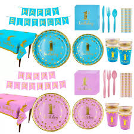
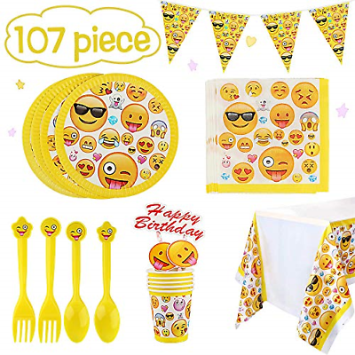
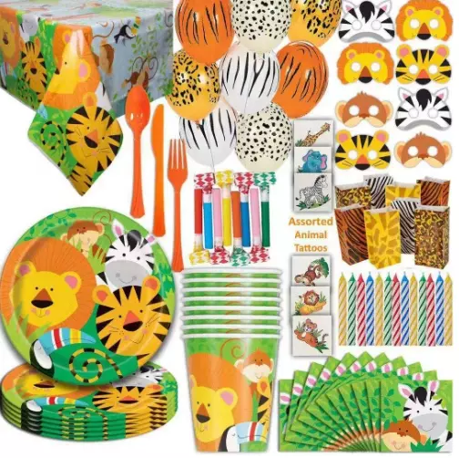

The facts about disposable dinnerware
Plastic plates, cups, cutlery and drink stirrers can’t be recycled easily at our recycling facilities, even when they are made from recyclable plastic. These items are wrong shape or are too light to be sorted correctly by recycling machines, which are designed to separate larger items like bottles and tubs. Recycling machines will often mistakenly sort plastic dinnerware as paper. The plastic items end up contaminating the paper and cardboard products and significantly reduce the quality of the recycled paper products. After being used for only a few minutes, disposable dinnerware ends up in landfill or worse, as litter on our streets or in our parks and waterways for potentially hundreds of years.
-

PLASTI HOME Reusable Plastic
Tired Of Heavy, Fragile Dishes & Drinking Glasses? Make your daily life in the kitchen easier by replacing your glass tableware with this reusable hard plastic dinnerware set! Plasti Home plastic tableware set is ideal for set in unique designs
-

PLASTI PARTY Reusable Plastic
The Reusable Food Serviceware Guide is a project of Clean Water Fund and the. ReThink ... At first glance, single-use disposable plates, cups, cutlery and other foodware seem inexpensive and convenient. ... designed for thousands of uses. ... COLORS. VENDOR.
-

PLASTI EVENT Reusable Plastic
The Reusable Food Serviceware Guide is a project of Clean Water Fund and the. ReThink ... At first glance, single-use disposable plates, cups, cutlery and other foodware seem inexpensive and convenient. ... designed for thousands of uses. ... COLORS. VENDOR.
We handle all of your dispose-crockrey needs.
Disposable Items. Plastic Disposables. Disposable Glasses. Carry Bags. Polythene Bags. Kirana Bags. Silver Items. Silver Foils. PP Non-Woven Products. PP Non-Woven Fabrics. Non - Woven Fabrics. PP Non-Woven Fabrics. Paper Plates. Disposable Plates. Plastic Containers. Recyclable Containers. Use and throw items. Paper Cups. Disposable Baby Diaper. Disposable Plates from Banana Leaves. Blood Bags. Disposable Paper Plate. Baby Wet Wipes and Facial Wet Tissue. Disposable Plastic Syringes. Sanitary Napkins. Baby & Adult Diapers & Sanitary Pads. Printed Paper Shopping Bags. Biodegradable Disposable Cups and Plates. Thermocol Glass and Plates.
Contact Us
Mai Dayal Singh, sit at main market, Delhi road. Saharanpur
contact@maidayalsingh.in
About Our Company
We "Dispose ecofriendly" established in the year 2010 is a famous firm that is occupied with manufacturing and assembling a wide combination of Disposable Crockery items and Biodegradable Thermocol crockery products like Paper Plate, Paper Cup, Disposable Dona, and Disposable Glass.